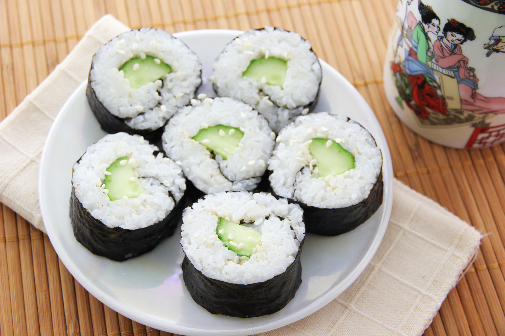

Sushi

Cucumber Sushi
Cucumber sushi rolls! These rolls are simply declicious and vegetarian friendly.
You can easily add imitation crab for additional protein.
Serve with soy sauce and wasabi for more flavor!
Ingredients
- 1 1/4 cups water
- 1 cup uncooked glutinous white rice (sushi rice)
- 3 tablespoons rice vinegar
- 1 pinch salt
- 4 sheets nori (dry seaweed)
- 1/2 cucumber, sliced into thin strips
Steps
- Prepare the rice
- Combine rice and water in saucepan and bring to a boil
- Cover,reduce heat to low and simmer for 20 minutes
- Check if rice is done (rice should be tender and water has been absorbed)
- Remove from heat and stir in rice vinegar and pinch of salt
- Set aside to cool
- Assemable sushi rolls
- Cover a bamboo sushi mat with plastic wrap
- Place a sheet of seaweed over the plastic
- Use hands to spread the rice evenly onto the sheet, leaving 1/2 inch empty on the bottom
- Arrange strips of cucumber across the center of the rice
- Lift the mat, roll the vegetables once, and press down
- Unroll, then roll again towards the exposed end of the seaweed sheet to make a long roll
- Moisten the end with water to help seal the roll
- Set aside and continue with remaining nor sheets, rice, and fillings
- Serve sushi slices
- Use a sharp wet knife to cut the rolls into 5 or 6 slices
- Serve the slices facing up
- Serve alongside condiments if desired